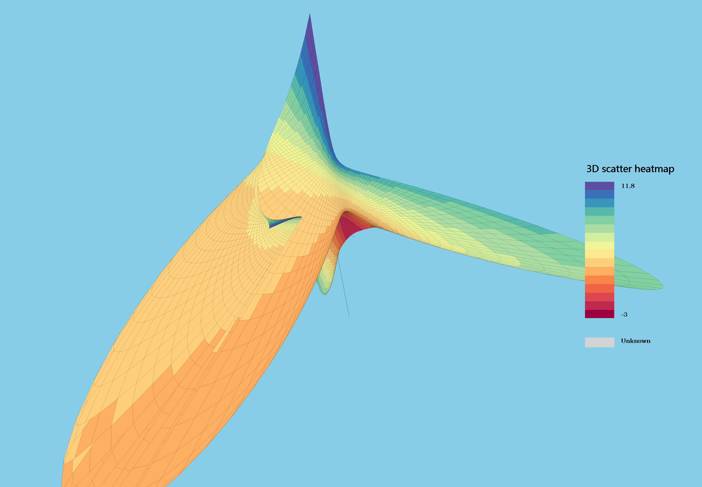
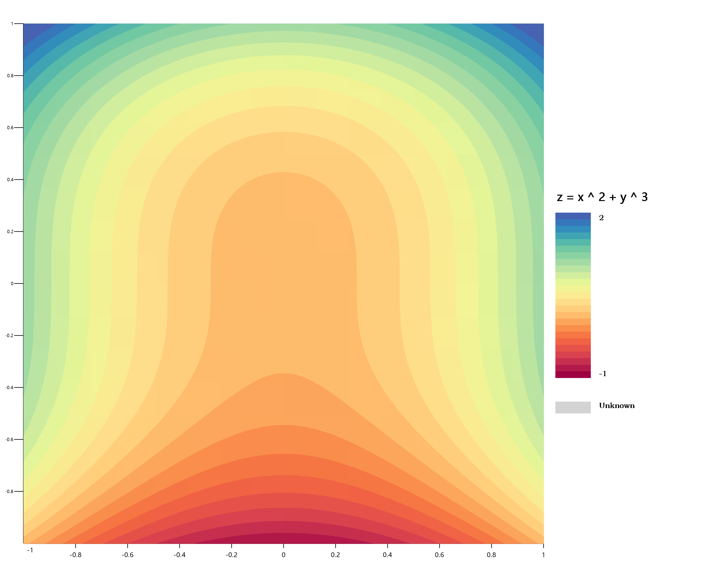

Probably some namespace and object name may changes frequently on each commit, and you are feel free to using the Object Browser in visual studio to adapted to the object not defined problem which was caused by these changes.....

A visualbasic language feature runtime library for data science CLI architecture applications which is running on Windows/Linux/macOS Desktop/server platform or supercomputer platform. This framework project includes a lot of mathematics utility tools and the utility code extension functions for the data sciences programming in VisualBasic language, and extends the VisualBasic programming language syntax. Makes the VisualBasic programming style more modernized in the data science industry by using this runtime library framework.
Abount VisualBasic code style guidelines:
+ https://github.com/xieguigang/sciBASIC/tree/master/vb_codestyleGuides for using this framework, you can found the document and content index at the README.md(This guidelines document is currently compiling for users):
+ https://github.com/xieguigang/sciBASIC/blob/master/guides/
For .NET Framework 4.6:
```bash
PM> Install-Package sciBASIC
PM> Install-Package sciBASIC -Pre
```
===================================================================
PageRank analysis on the text paragraph for find out the keyword, here is the pagerank result of the this example paragraph:
"the important pagerank. show on pagerank. have significance pagerank. implements pagerank algorithm. textrank base on pagerank."

```vbnet
Imports Microsoft.VisualBasic.Imaging
Dim bitmap As Image = Image.FromFile("./etc/lena/f13e6388b975d9434ad9e1a41272d242_1_orig.jpg")
Call bitmap.Grayscale().SaveAs("./etc/lena/lena.grayscale.png", ImageFormats.Png)
Call bitmap.GetBinaryBitmap
.SaveAs("./etc/lena/lena.binary.png", ImageFormats.Png)
Call bitmap.GetBinaryBitmap(BinarizationStyles.SparseGray)
.SaveAs("./etc/lena/lena.gray.png", ImageFormats.Png)
```
| Normal | Binary | SparseGray | Grayscale |
|---|---|---|---|
 |  |  |  |

vbnet
Imports Microsoft.VisualBasic.Data.ChartPlots


```vbnet
Dim func As Func(Of Double, Double, (Z#, Color#)) =
_
Function(x, y) (3 * Math.Sin(x) * Math.Cos(y), Color:=x + y ^ 2)
Call Plot3D.ScatterHeatmap.Plot(
func, "-3,3", "-3,3",
New Camera With {
.screen = New Size(3600, 2500),
.ViewDistance = -3.3,
.angleZ = 30,
.angleX = 30,
.angleY = -30,
.offset = New Point(-100, -100)
}) _
.SaveAs("./3d-heatmap.png")
```

You can using a lambda expression as the plot data source:
```vbnet
Dim f As Func(Of Double, Double, Double) =
Function(x, y) x ^ 2 + y ^ 3
Call ScatterHeatmap _
.Plot(f, "(-1,1)", "(-1,1)", legendTitle:="z = x ^ 2 + y ^ 3") _
.SaveAs("./scatter-heatmap.png")
```


The stacked barplot is a best choice for visualize the sample composition and compares to other samples data:
```vbnet
Imports Microsoft.VisualBasic.Data.ChartPlots
' Plots metagenome taxonomy profiles annotation result using barplot
Dim taxonomy As BarDataGroup = csv.LoadBarData(
"./FigurePlot-Reference-Unigenes.absolute.level1.csv",
"Paired:c8") ' Using color brewer color profiles
Call BarPlot.Plot(
taxonomy,
New Size(2000, 1400),
stacked:=True,
legendFont:=New Font(FontFace.BookmanOldStyle, 18)) _
.SaveAs("./FigurePlot-Reference-Unigenes.absolute.level1.png")
```

```vbnet
Public Function beta(x#, alpha#, _beta#) As Double
Return Pow(x, alpha - 1) * Pow((1 - x), _beta - 1) *
Exp(lgamma(alpha + _beta) - lgamma(alpha) - lgamma(_beta))
End Function
Public Function lgamma(x As Double) As Double
Dim logterm As Double = Math.Log(x * (1.0F + x) * (2.0F + x))
Dim xp3 As Double = 3.0F + x
Return -2.081061F - x + 0.0833333F / xp3 -
logterm + (2.5F + x) * Math.Log(xp3)
End Function
```


```vbnet
Dim data = DataSet.LoadDataSet("./Quick_correlation_matrix_heatmap/mtcars.csv")
Call data.CorrelatesNormalized() _
.Plot(mapName:="Jet", ' Using internal color theme 'Jet'
mapLevels:=20,
legendFont:=New Font(FontFace.BookmanOldStyle, 32)) _
.SaveAs("./images/heatmap.png")
```
Microsoft.VisualBasic.Mathematical.Plots.Heatmap::Plot(IEnumerable(Of NamedValue(Of Dictionary(Of String, Double))), Color(), Integer, String, Boolean, Size, Size, String, String, String) As Bitmap
Heatmap data source from R dataset
mtcarsand calculates the Pearson correlations:
R
data(mtcars)
write.csv(mtcars, "./Data_science/Mathematical/Quick_correlation_matrix_heatmap/mtcars.csv")
===================================================================
First of all, imports the language feature namespace of VisualBasic
```vbnet
' sciBASIC# general application runtime
' Microsoft.VisualBasic.Architecture.Framework_v3.0_22.0.76.201__8da45dcd8060cc9a.dll
Imports Microsoft.VisualBasic.Language
```
Old:
```vbnet
Dim s As String = ""
Do While Not s Is Nothing
s = blablabla
' Do other staff
Loop
```
New:
```vbnet
Dim s As New Value(Of String)
Do While Not (s = blablabla) Is Nothing
' Do other staff
Loop
```
Old:
```vbnet
Dim l As New List(Of String)
Call l.Add("123")
Call l.AddRange(From x In 100.Sequence Select CStr(x))
```
New:
```vbnet
Dim l As New List(Of String)
l += "123"
l += From x As Integer
In 100.Sequence
Select CStr(x)
```
```vbnet
Dim min As int = 1
Dim max As int = 200
Dim x As Integer = 199
Console.WriteLine(min <= x < max) ' True
x += 10 ' 209
Console.WriteLine(min <= x < max) ' False
x = -1
Console.WriteLine(min <= x < max) ' False
```
===================================================================
Copyleft ! 2017, I@xieguigang.me